I turn complex ideas and specialist knowledge into stories journalists want to tell — and audiences want to read.
Russian & English · Based in Bali · Open to international projects
Editorial thinking meets communications strategy. From identifying an angle to interviewing subject-matter experts and working directly with journalists, I connect expertise with the wider conversation.
Positioning, messaging, media narratives and communications planning informed by the audience and news agenda.
Story development, targeted media outreach, interview opportunities and editorial placements.
Interviews with specialists, expert commentary, bylined articles and clear explanations of complex topics.
Original editorial concepts, partnerships and cross-disciplinary stories that reach beyond a specialist audience.
Examples of earned media and editorial campaigns developed for specialists across healthcare, sport and lifestyle. The linked publications are primarily in Russian.
Built a medical expert's media presence from the ground up. Developed story angles, interviewed the specialist, prepared editorial materials and secured coverage in national media, television and radio. Also developed a cross-disciplinary initiative with an alpaca farm.
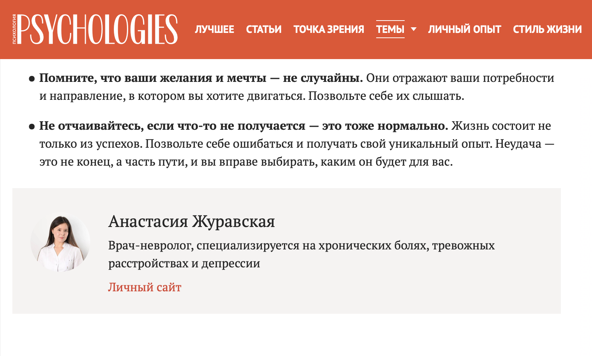
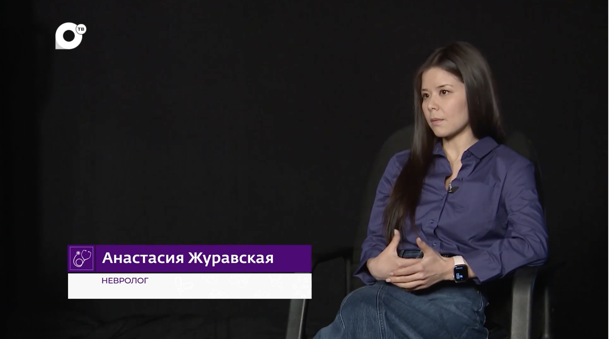
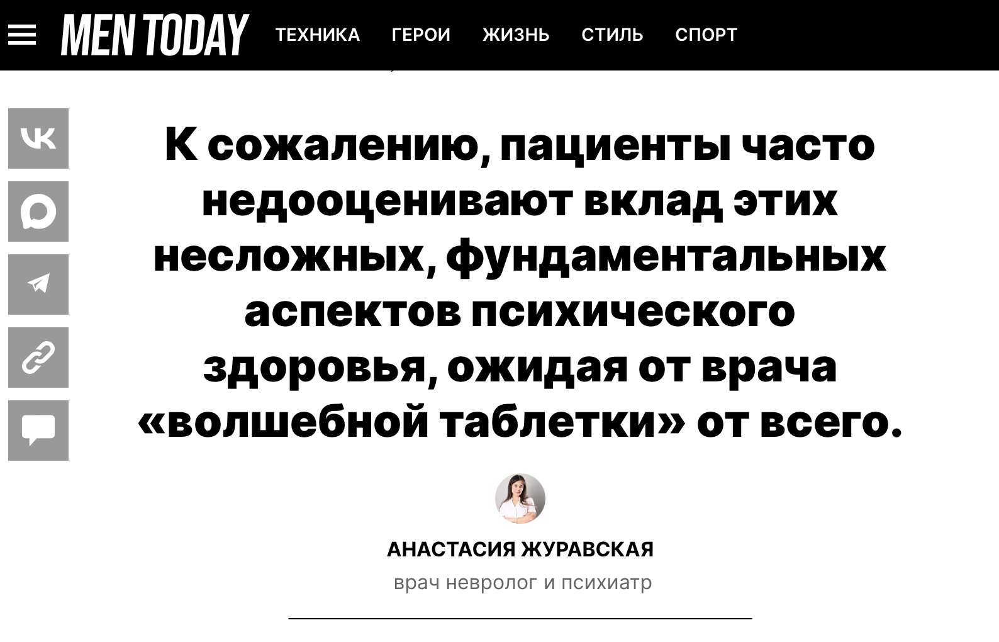
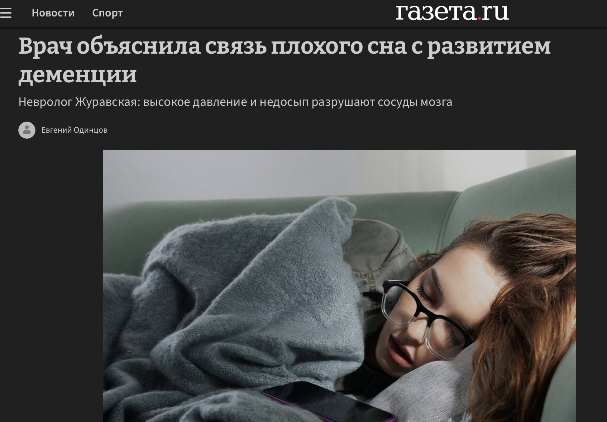
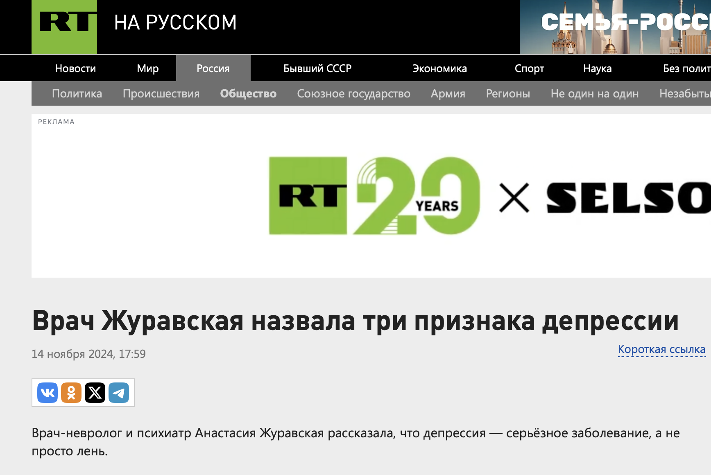
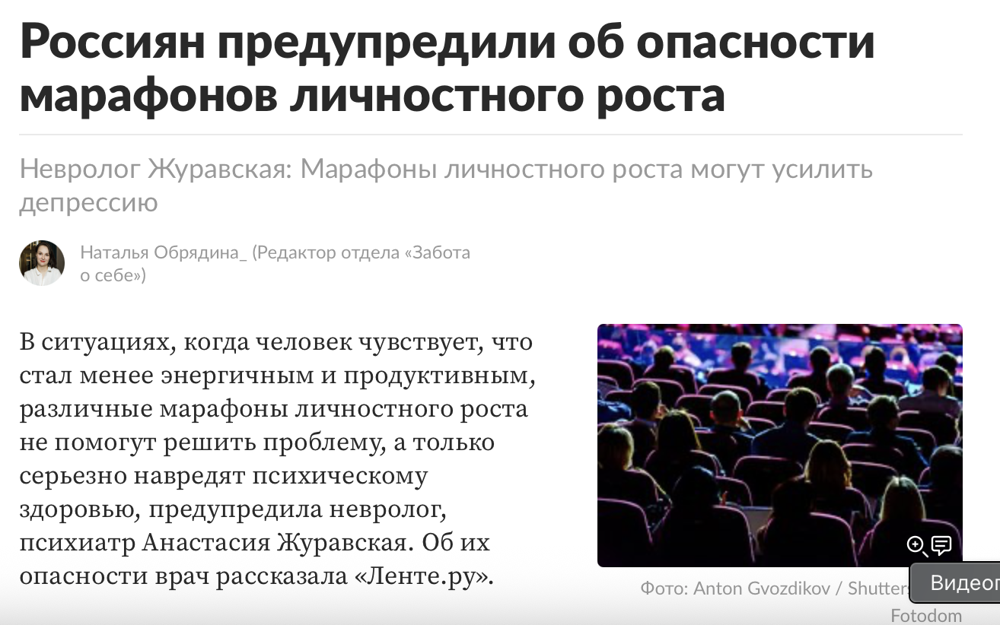
Developed media positioning and story concepts bridging professional surfing, travel, wellbeing and business. Secured coverage in Forbes Life, Championat, Vokrug Sveta and Men Today, plus a mention on Forbes.com.
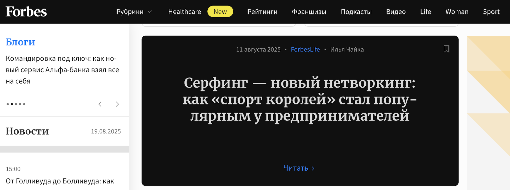
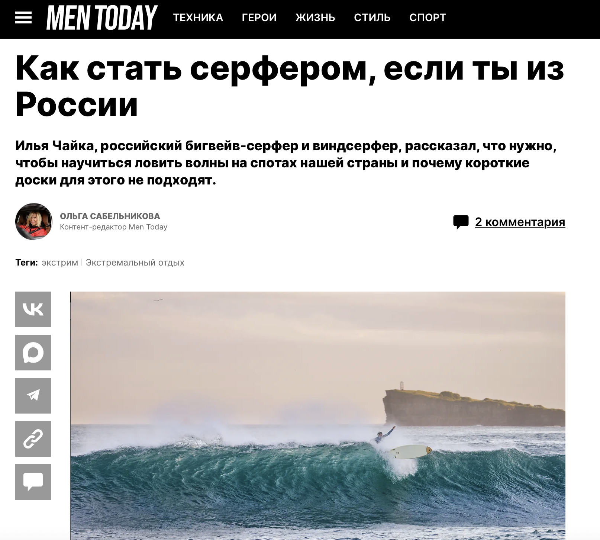
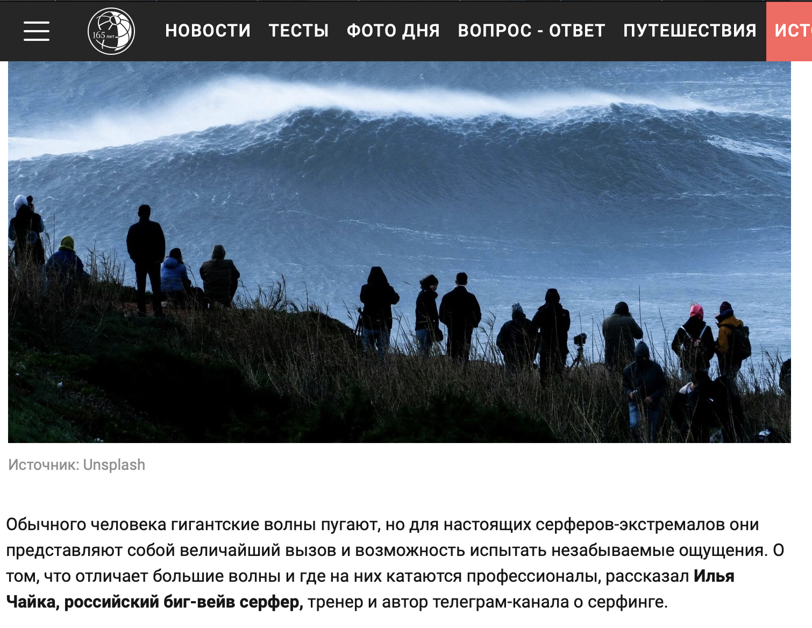
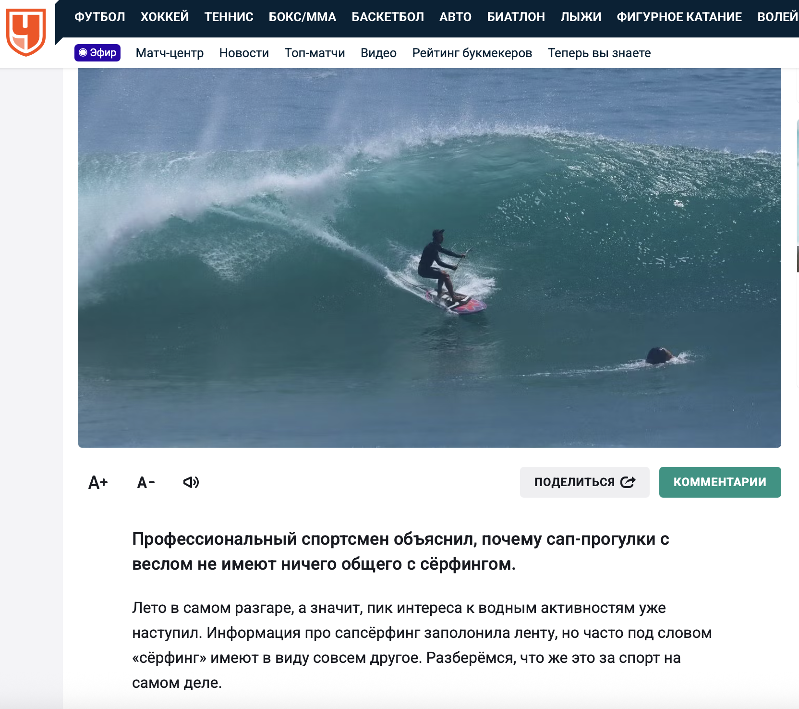
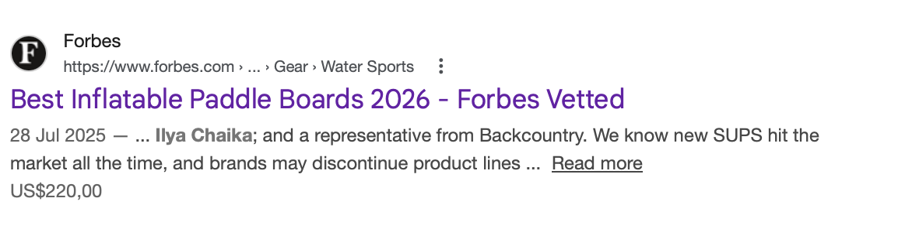
Developed editorial topics and media placements to establish a stylist's profile in a highly competitive field, improving the visibility of expert coverage in searches for her name.
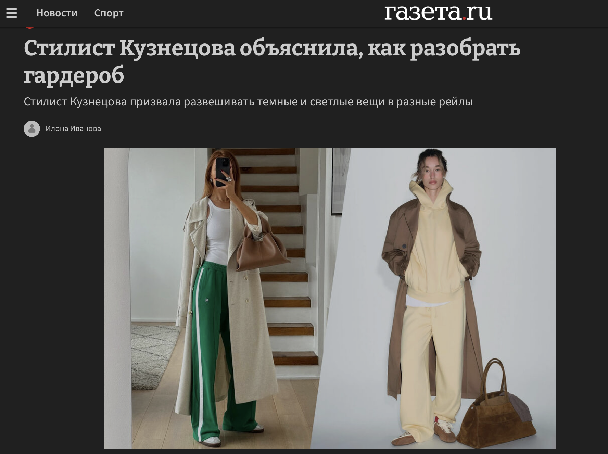
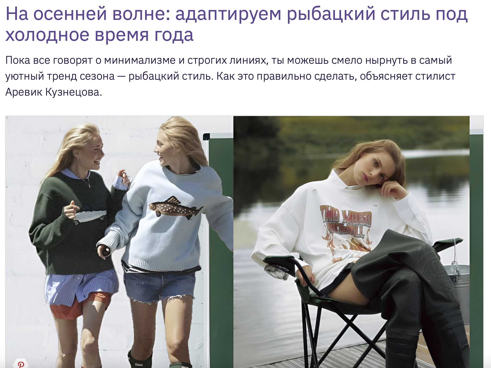
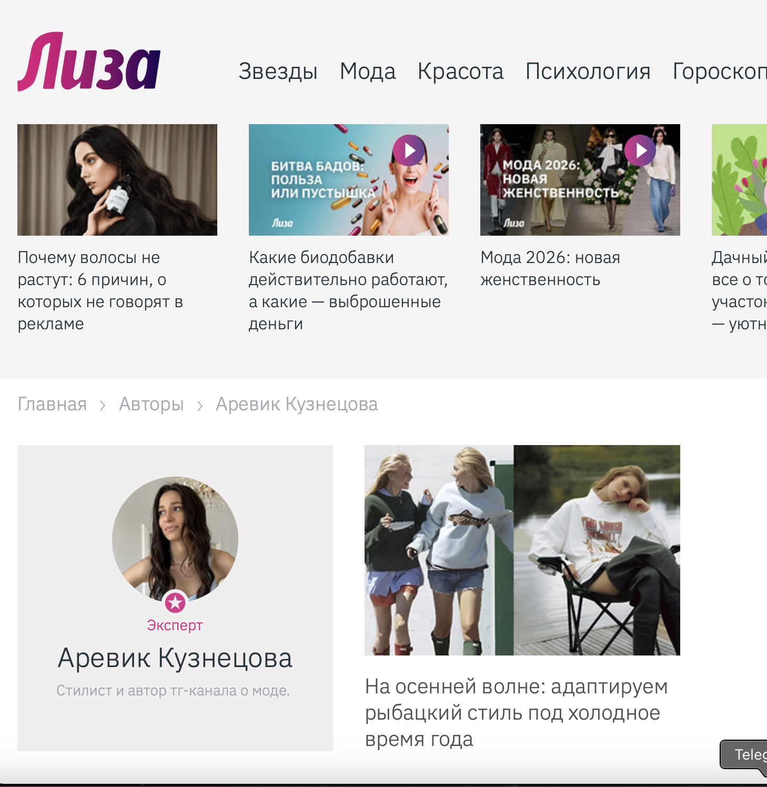
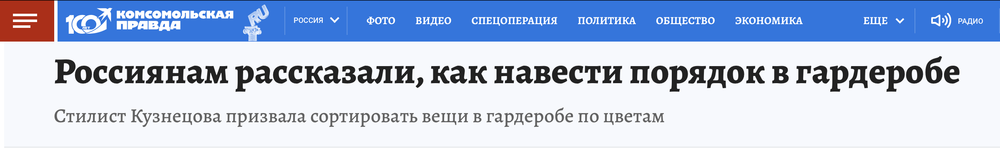
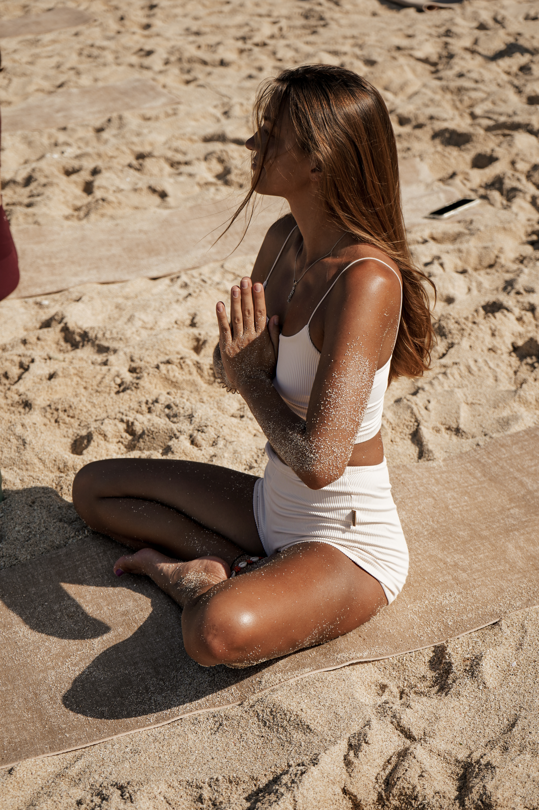
I'm Olga Gusarova, a communications professional with a background in journalism and editorial work for Russian and international publications.
I help specialists and organizations identify the stories worth telling, shape credible public narratives and connect with relevant media.
My work spans medical experts, sport and lifestyle. I'm especially interested in health, science, public-interest communications and meaningful international projects.
Languages: Russian and English (fluent); Spanish and Indonesian (conversational).
Available for selected communications, editorial and media relations projects.
Contact Olga